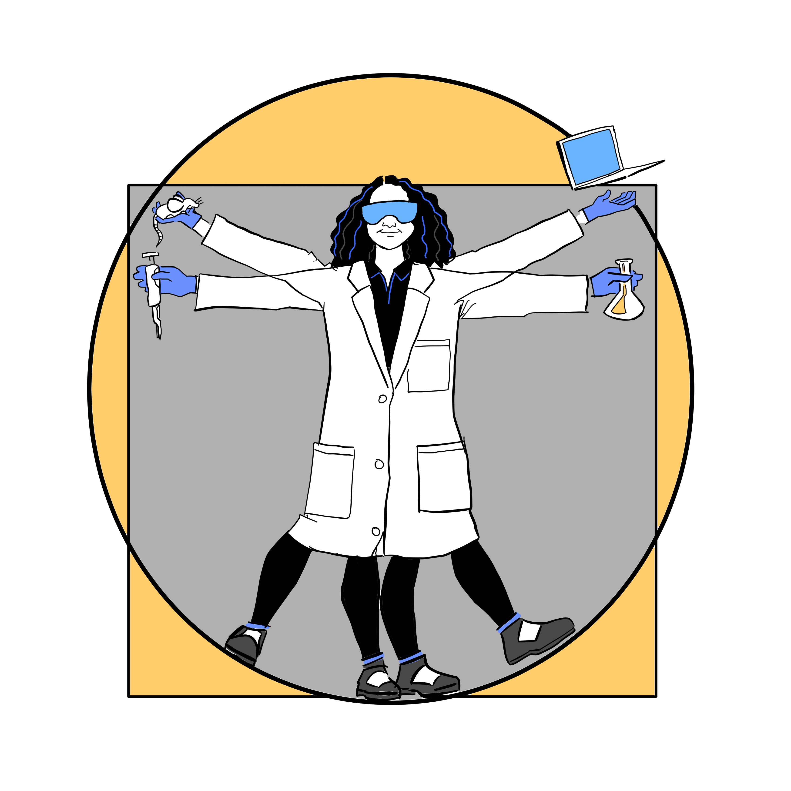
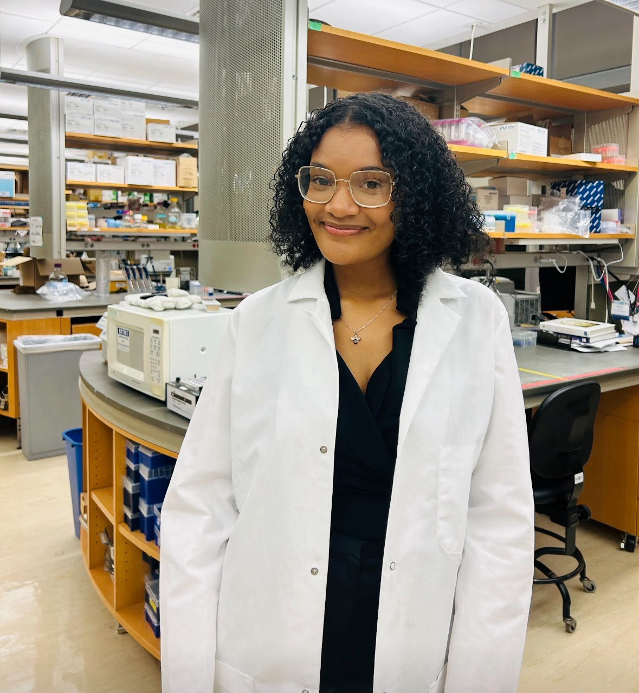

The day is July 23rd and I made another mistake… I forgot to put an important material (an anti-mitotic aliquot) back into the freezer before I headed out for the day. At first, I didn’t even realize it. I cleaned up, packed my bag, and left like everything was fine. Later that day, my mentor texted me. Someone had found it sitting out while closing the lab.
My heart sank. I knew exactly what that meant. It didn’t ruin anyone’s experiment, but it did mean that the aliquot couldn’t be used anymore. It had to be thrown away, and that was on me. It wasn’t a crisis, but it felt like one. That kind of mistake lingers, even when people are gracious about it. You start replaying it repeatedly in your head, wondering how you could have forgotten something so basic, wondering if you are cut out for this.
I took that mistake very hard. I remember thinking that maybe I just needed to crack the code for “building the perfect scientist.” Maybe I could be the test dummy for this recipe; figure out how to assemble the version of myself who never slips and always gets it right.
I’m an undergrad, and I love working in the lab. Something is calming about it. I love the quiet focus, the rhythm of pipetting and timing, the smell of ethanol and warm media. I love the tiny details that seem small but somehow connect to massive questions about how life works. I love that science follows me home. I find myself thinking about protocols while I’m washing dishes or mentally troubleshooting an experiment while waiting at the bus stop. The lab is the one place where I feel curious, capable, and completely absorbed in what I’m doing.
But it’s also the place where I feel the most unsure of myself.
When I first started exploring my interest in science, I thought scientists didn’t make mistakes. I saw them as completely put together, always knowing what to do, labeling everything perfectly, never forgetting a single step. I thought that was the secret to building the perfect scientist: flawlessness.
Then, I started working in a lab.

And I started messing up. A lot. I’ve mislabeled samples, missed steps, pipetted wrong amounts, misread instructions, and yes, forgotten to freeze things that needed freezing. Each time I mess up, I feel this wave of embarrassment, like I’m not measuring up, like I’m the only one who doesn’t know how to be perfect.
No one tells you how heavy that feels. The self-doubt sneaks in fast. You can spend hours learning how to minimize errors in your experiments, but no one prepares you for what it feels like when the source of the error is you.
It’s taken me time to understand that mistakes are not the exception in science. They are the rule. The scientists, ranging from first year PhD to Post-doctoral students, I work with still mess up. I have seen them troubleshoot, restart, and re-evaluate. What has stuck with me most is how they handle it. They stay calm. They don’t blame others or themselves. They ask what happened, learn from it, and move on.
I have learned so much just by watching how people respond. There is a quiet kind of grace in the way they recover. It reminds me that messing up doesn’t mean I don’t belong. It means I am learning. What makes it even more comforting is that my mentor always seems to know exactly what mistakes I’ve made because she has made it before herself. Her mentorship allows me to not only learn from my mistakes, but from hers too. That reminder that even the people I look up to have stumbled along the way has given me reassurance as a scientist in training.
That shift has changed how I think about being in science. I still feel embarrassed when I make a mistake, but now I also feel more equipped to grow from it. Instead of pretending it didn’t happen, I talk about it. I ask for help. I figure out what to do differently next time.
And this is one of the biggest reasons I want to pursue a PhD. I don’t just want to run experiments. I want to be in places where people are allowed to learn out loud. Where growth happens because people are honest about what went wrong. Where learning from failure is not just accepted, it is expected.
The more I do research, the more I realize that I love this process. I love asking questions no one has answered yet. I love the moments where things finally click. And weirdly, I’m starting to love the mess too. Because now, even when things go wrong, I can still see myself getting better.
And it is not just science where I have felt that shift. Being in the lab has changed the way I approach life, too. I am learning how to sit with discomfort. I am learning how to try again when something doesn’t go to plan. I am learning how to ask for feedback, how to be wrong, and how to move forward with more clarity than before. I make mistakes in class, in conversations, in trying to balance lab work with having a personal life, and I am starting to see those moments not as failures but as part of figuring things out.
So, if you have ever gone home from the lab and felt like maybe you don’t belong or stared at your notebook, wondering how you messed something up again, I just want you to know you are not the only one. And maybe the doubt you feel is not a sign that you should quit, but a sign that you care enough to get it right.
Maybe science is not about being the person who never fails. Maybe it is about being the person who keeps going anyway.
What if that is how you build a scientist?
